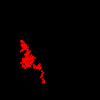

Open the Circle Frame workspace.
Your task is to use loops to frame the canvas with circles, as shown in the image above.
x or y value that starts at 10.20 each step.200.It is possible to do this with a single for-loop, but you may find it easier to use four separate loops (one for each side of the frame).
In our previous Random Walk assignment, we used global variables to
represent the location of a circle, and each draw cycle we added a random
number between -2 and +2. This created a wandering
blob that eventually left the canvas.
walk() Function
In this workspace, your first task is to implement the walk()
function, whose purpose is to draw 200 steps of a random walk.
x and y variables.Inside the walk() function:
x, y)x and y by adding a random value between -2 and +2.
Important: Draw the circle before modifying
x and y.
You do not have to randomize the fill() of the circle. The
color is already set using the parameter of the function.
If done properly, running the program should produce a small red squiggle. Each time you run it, you should see a different squiggle at a different starting location.

The walk() function is designed to take in a value as a
parameter, then use that value as its color.
Because the program is using HSB mode instead of RGB, the parameter represents the hue of the squiggle.
The draw() function is currently calling walk(0),
which represents red. Update draw() so that it makes a rainbow
splatter by calling walk() multiple times using a range of hue
values from 0 to 360 (for example, increasing by
10 each time).
This should produce a pattern similar to the example image above.
dotted() Function
Your first task is to implement the dotted() function, whose
purpose is to draw a dotted line across the screen, starting at a specific
x and y location determined by the parameters.
x value.x to the parameter startX.x by 20 each step.x goes past the width of the canvas.line() at the provided y value.If done properly, running the program should produce a single dotted line toward the top of the window.

Now that the dotted() function works properly, our next goal is
to create a pattern of dotted lines down the canvas.
draw() function with a for loop to represent the y coordinate.y = 4.9 each step.y goes past the height of the canvas.
Each time through the loop, call dotted() using your looping
variable for y. We want to stagger every other line:
y is even or odd (hint: %).y is even, call dotted(-5, y).y is odd, call dotted(5, y).The end result should match the alternating pattern shown above.
Hover over the example above. Notice that a row of rectangles is drawn, and that they grow when the mouse gets closer.
Add a loop to generate a series of x values that are spaced
10 apart and drawn halfway down the canvas. Each time, draw a rectangle whose height is related
to how far the mouse is from the rectangle's x. You can use this calculation:
let h = 50 / Math.abs(mouseX - x);
A rectangle drawn using the above as its height will grow as the mouse gets
closer to it. You may notice that when you are very close to the center it
grows too large and may flicker. Fix this by limiting the maximum height:
if h is greater than 20, set h to
20.
Hover your mouse over the demo above. Notice that when the mouse is close to
a ring, it is drawn with a different strokeWeight().
In the draw() function, write a for loop whose looping variable
represents the radius of the circles:
1020 each step130For each radius that you generate, draw a circle centered at 150,150.
Determine how far the mouse is from the center of the canvas/circles:
let mouseDist = dist(mouseX, mouseY, 150, 150);
This is useful because when the mouse is exactly on a circle, the mouse
distance will match its radius. Being that exact is difficult, so we will
treat it as “close enough” if the mouse is within 5 pixels of
the radius.
Inside your loop, before drawing each circle, use an if
statement:
mouseDist is between radius - 5 and radius + 5, use a large strokeWeight().strokeWeight().Hover over this demo and notice how the squares change color when the mouse is over them.
This is very similar to the Spaced Squares assignment that you've already completed. Much of the code will be the same.
A helpful function is the mouseInBox() function you wrote in
the Boolean Functions assignment. Start by copying it into the Box Highlight
workspace.
Like before, each square is drawn 30 pixels apart, starting at
x = 20. Before drawing each square, call your
mouseInBox() function to decide whether to use a colorful fill
or a white fill.
Note: mouseInBox() takes four parameters:
x, y, w, and h.
If you're drawing using square(), you only provide one size, but
mouseInBox() still needs both width and height.
For Example: you may be drawing squares with a line like this`:
square(x, 20, 20);
Detecting if the mouse is in that same box would require an if statement like this:
if (mouseInBox(x, 20, 20, 20)) {
}